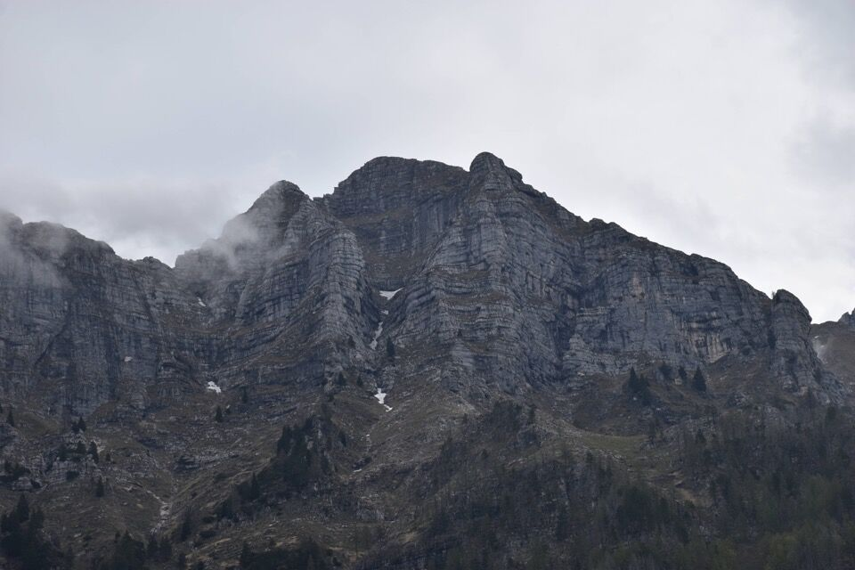

Partiamo da Patoc, raggiungendo il bivio con la Via Alta di Raccolana. Sullo sfondo, un po' innevato, il monte Cimone, e sotto di esso il cocuzzolo assai spelucchiato del Cuel dai Sbrici. In base alle mie osservazioni credo che dalla cima del Cuel dai Sbrici sia possibile continuare per la cresta spartiacque del coston dai Sbrici (pieno di schianti dovuti all'incendio) e con una cengia raggiungere la zona dell'ex stavolo dai Sbrici, oppure continuare per la cresta ora più affilata. È una delle varianti che mi piacerebbe sperimentare. In effetti, il Marini-Galli afferma che:
... dal paese di Chiout Cali si diramano i tre antichi sentieri praticati dai valligiani per accedere ai prati pensili sotto le creste: il sentiero della «Viene», il sentiero del «Chiavalot» e il sentiero dei «Sbrici». Una frequentatissima scorciatoia di quest'ultimo era costituita dal sentiero del «Palait», che dall'abitato raggiunge direttamente lo sperone boscoso sulla «via alta» dove sorgenva un tempo lo stavolo omonimo; da qui si proseguiva direttamente lungo il Coston dei Sbrici, a tratti roccioso, affilato ed ertissimo, senza traccia di sentiero, per sboccare il alto nei pressi dell'inizio della teleferica dei Sbrici. Esistente solo fino alla «via alta» il sentiero ha oggi poca importanza pratica (1983, NdR) e in discesa il suo imbocco non è facile da trovare.

Dopo aver fatto su e giù un paio di volte per questi posti, non mi è sfuggito di osservare il versante Nord della cresta Indrinizza, che da sella Buia (dove sorge il bivacco Igor Crasso) sale al monte Sart: per quell'erto costone proprio al centro della foto, sospeso fra il rio de lis Cladis e il rio Giavedeit, passa il CAI 633 che da Pezzéit porta a sella Buia; deve essere molto interessante la traccia segnata in nero che da Sotmedons si congiunge in alto al suddetto sentiero.

Siamo a casa sua...
In vista del Cjastelát con le sue belle pareti meridionali; caratteristica la forca che fa capo al rio Sbrici, via d'accesso al misterioso monte. Il prato che s'intravede a dx è il Plan de la Cjavile: chissà se c'è un collegamento fra la forca e il prato anche per noi bipedi!

Il Ciuc di Vallisetta, con evidente il canalone Sud, misteriosa e difficile via d'accesso alla cima.
Ecco che appare finalmente la Forca de la Puartate, con un gioco di nuvole davvero suggestivo.

La parte bassa del selvaggio sperone del Rop: il "vero" Rop passa sulla cresta spartiacque dello sperone, dunque sull'estremità destra in foto, mentre una variante, che inizia immediatamente dopo l'attraversamento del rio Tosàn, sale a sx del canale visibile in centro foto, e mediante un traverso da brivido, si congiunge al sentiero originario, proprio sotto allo spigolo da rimontare.

Saliamo per il Rop, sempre ripidissimo, con uno spigolo delicato ed esposto, oltre all'impegnativa paretina finale di III.

Non si pensi che dopo il salto roccioso sia un gioco da ragazzi... la ripidezza midiciale sconsiglia di scendere per di qui, già una volta l'ho fatto e non vorrei ripeterlo.

Finalmente usciamo sui ripidissimi prati meridionali sotto la Forca.

La vedetta.

Il bellissimo foro della Puartate.
Ci tengono d'occhio: qui un camoscio sulla cima da lis Miris.


I ripidissimi prati a Sud della Forca, verso Pecêit nel fondovalle.

I prati a Nord della Forca, che sprofondano verso l'abisso dello Sfonderât.

Pure qualcuno sullo Jovèt.

Con queste nuvole non ha senso salire sullo Jovet Blanc, peccato.
Dopo qualche minuto di discesa sento dei rumori dietro di noi, mi giro e... un camoscio immobile a dieci metri di distanza! Davvero curioso, probabilmente era consapevole che su terreni così ripidi ci dava dieci a zero per cui non aveva paura.

La discesa dalla Forca al ripiano dove sorgeva lo stavolo dai Sbrici non è così ovvia come si potrebbe pensare, e qualche dubbio ci è venuto. Anche il terreno resta sempre ripidissimo.


Ormai in lontananza, la Puartate e il Plan de la Cjavìle.

Il mio posto preferito per pranzare: sulla parte alta del coston dei Sbrici.
In nessun altro luogo ho visto un salto così mostruoso: qui l'abisso del rio di Malimbérg.

Scendiamo per il troi dal Sbrici, già noto da una precedente escursione esplorativa.